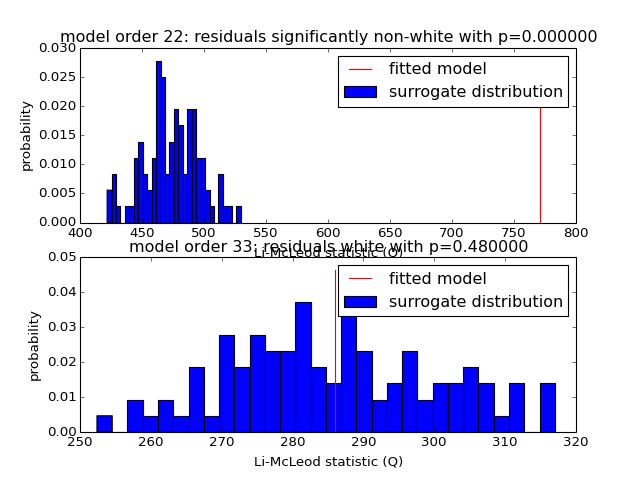

misc example code: validation.py¶
(Source code, png, hires.png, pdf)
{kind=link}
{kind=link}

# Released under The MIT License (MIT)
# http://opensource.org/licenses/MIT
# Copyright (c) 2013-2015 SCoT Development Team
"""
This example shows how to decompose EEG signals into source activations with
MVARICA, and visualize a connectivity measure.
"""
import numpy as np
import matplotlib.pyplot as plt
import scot
from scot.varica import cspvarica
from scot.datatools import cut_segments
import scot.plotting as splot
# The data set contains a continuous 45 channel EEG recording of a motor
# imagery experiment. The data was preprocessed to reduce eye movement
# artifacts and resampled to a sampling rate of 100 Hz. With a visual cue, the
# subject was instructed to perform either hand or foot motor imagery. The
# trigger time points of the cues are stored in 'triggers', and 'classes'
# contains the class labels. Duration of the motor imagery period was
# approximately six seconds.
import scotdata.motorimagery as midata
raweeg = midata.eeg.T
triggers = midata.triggers
classes = midata.classes
fs = midata.samplerate
locs = midata.locations
# Set random seed for repeatable results
np.random.seed(42)
# Prepare data
#
# Here we cut out segments from 3s to 4s after each trigger. This is right in
# the middle of the motor imagery period.
data = cut_segments(raweeg, triggers, 3 * fs, 4 * fs)
m = 4 # number of sources to estimate
h = 66 # number of lags for whiteness test
i = 0
for p in [22, 33]:
i += 1
print('Model order:', p)
print(' Performing CSPVARICA')
var = scot.backend['var'](p)
result = cspvarica(data, var, classes, m)
if result.a.is_stable():
s = ''
else:
s = '*NOT* '
print(' VAR model is {}stable.'.format(s))
# discard the first p residuals
# r = result.var_residuals[p:, :, :]
print(' Testing VAR residuals for whiteness up to lag', h)
pr = splot.plot_whiteness(result.a, h, repeats=100,
axis=plt.subplot(2, 1, i))
if pr < 0.05:
plt.gca().set_title('model order {}: residuals significantly '
'non-white with p={:f}'.format(p, pr))
else:
plt.gca().set_title('model order {}: residuals white '
'with p={:f}'.format(p, pr))
splot.show_plots()